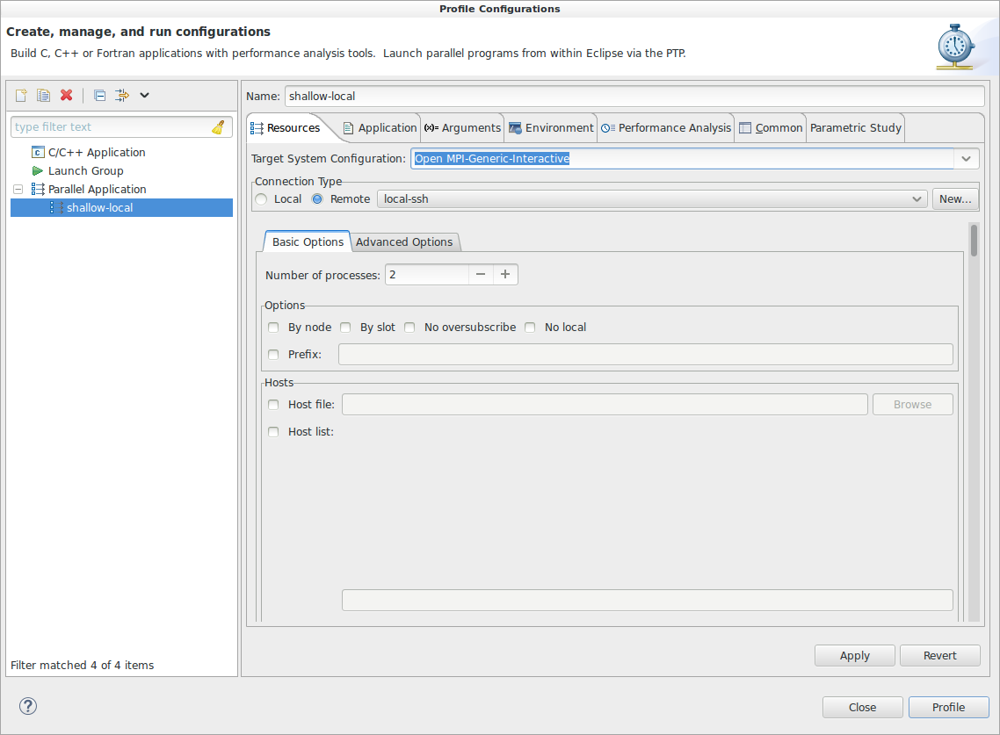
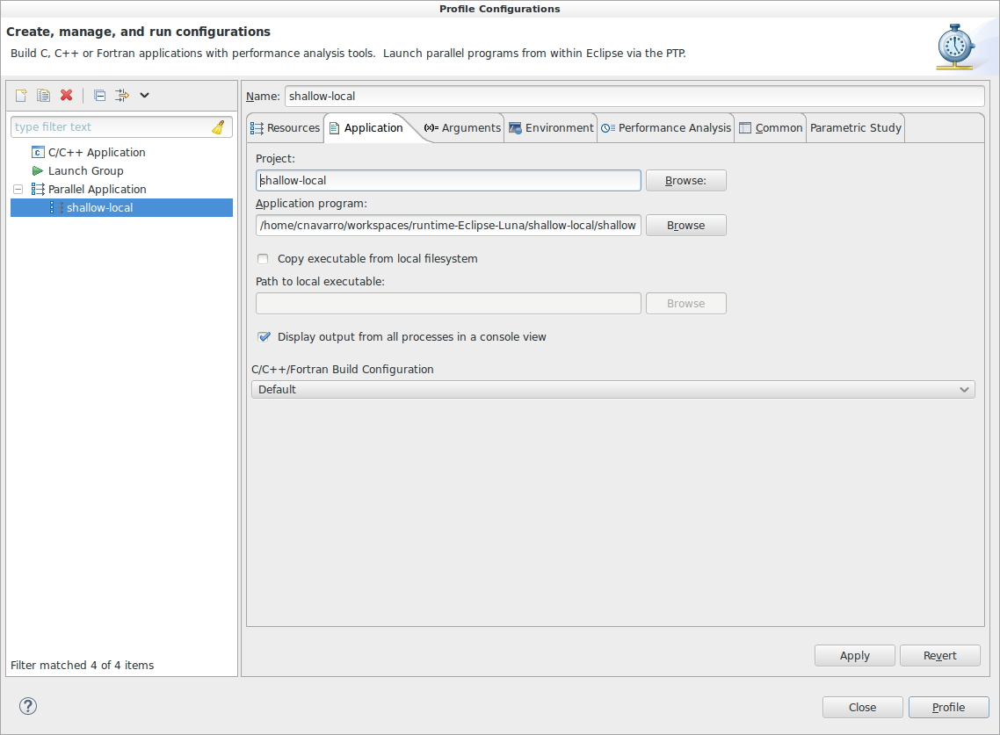
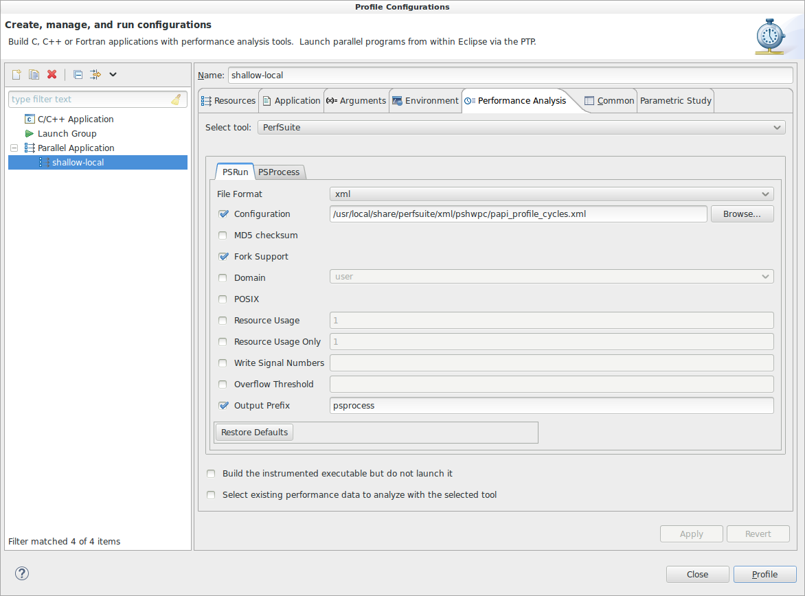
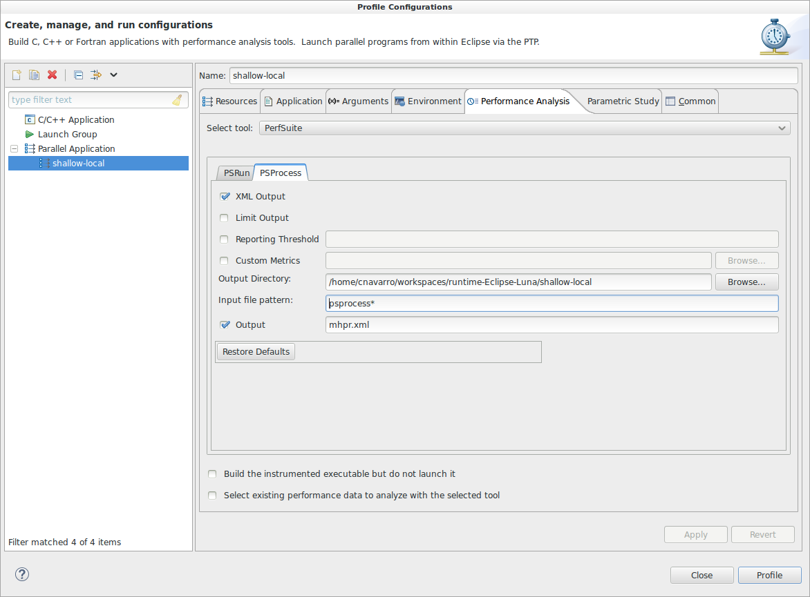
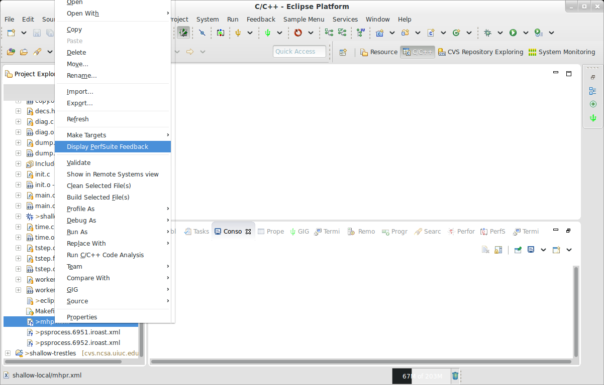
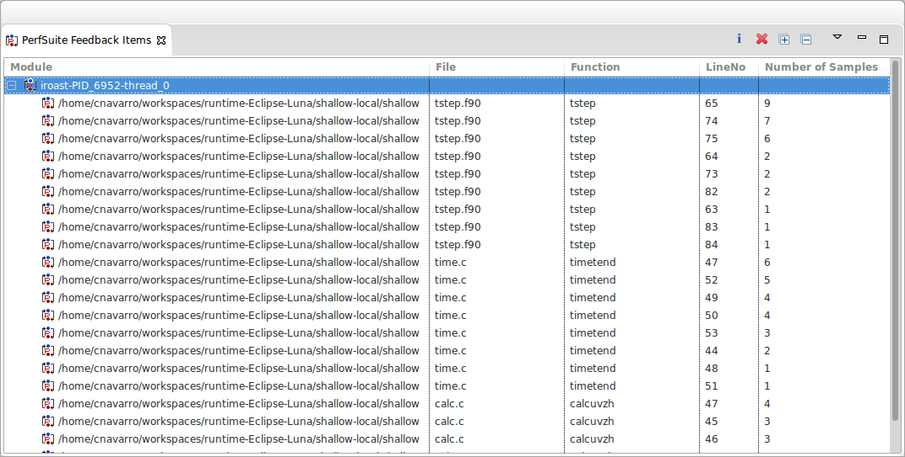

PerfSuite is a collection of tools, utilities and libraries for software performance analysis that can assist in optimizing your code. It has been integrated into the PTP Development environment through the External Tools Framework (ETFw) so that it can be run in your Eclipse IDE instead of at the command line. There are also PerfSuite plug-ins that can parse the PerfSuite output into the PerfSuite Feedback view for easier navigation to areas of concern. The intention of this guide to assist in running PerfSuite through the use of an example.
To analyze your application using the Perfsuite ETFw workflow, psrun and *psprocess must be available in your system path. If they aren't, then you will need to compile and install them from the source code found at http://perfsuite.ncsa.illinois.edu/. You may also need to install additional software that is required by PerfSuite if it is not already installed. The instructions can be found at the previous link.
To setup a new profile launch configuration, go to Run > Profile Configurations.... Where it says Parallel Application, right click and select New. You should see a wizard page similar to the one below. If you already have a Run Configuration, then most of this should already be filled in for you and you can skip to the section on the Performance Analysis tab.

In the Resources tab, specify a target configuration, connection and the number of processors to use for this analysis. In the example here, the Open MPI-Generic Interactive target system is being used for a local machine that is being connected to via SSH and 2 processors are being used. Change these settings so they are appropriate for your machine.
Next, select the Application tab. Here you will specify the Project and the Application Program to execute. In this example, the project name is shallow-local and the application is the shallow water model. Your application tab should look similar to the one below:

Make the appropriate changes for your application and project before moving on to the next section.
The last tab is the Performance Analysis tab. Select it and then fill out the PerfSuite tab with the options you want to use when running psrun. For information on what the options are, you can either access the help associated with the executable or visit http://perfsuite.ncsa.illinois.edu

In this example, the output format is xml, the configuration to use is papi_profile_cycles.xml and the output prefix is psprocess. Whatever the output prefix is should match what you specify in the PSProcess tab so the psprocess executable understands which files to post process. After making selections, select the PSProcess tab.

For PSProcess, we specify the output as XML Output, the output directory should be your project directory, the output file pattern should match the prefix you specified in the previous tab and the output file for this example is mhpr.xml. The output file name can be anything.
Once everything is specified, click the Profile button.
When the execution has finished, you should see a new file called mhpr.xml in your project folder (or whatever you specified). If you right click on it, you should see an option Display PerfSuite Feedback (see below).

This will open the Perfsuite Feedback view and allow you to navigate your performance results.

See the PerfSuite Feedback view for more information on using this view.